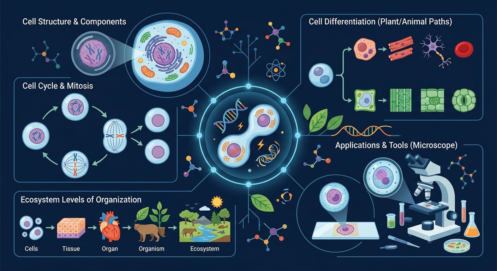

🎯 能说出细胞分裂的两种主要类型
🎯 能判断有丝分裂各时期染色体行为特征
🎯 能分析细胞分裂异常导致的常见疾病
从受精卵到 37 万亿个细胞——揭秘细胞分裂与分化的奥秘
我是你的生物小助手。这节课的关键：分裂让细胞数目增多，分化让细胞种类增多。遇到不懂随时问我！
❓ 为什么细胞分裂后新细胞和原来一模一样？
❓ 细胞分裂时染色体怎么分才不会乱？
❓ 分裂出来的细胞为啥有时候会不一样？
学完这一课，这些问题你都能自信地回答。
一个人体细胞有 46 条染色体。这个细胞分裂一次后，两个新细胞各有多少条染色体？
点击"下一阶段"按钮，观察细胞从间期→前期→中期→后期→末期的完整变化。注意观察染色体的行为！
人体从受精卵发育成个体的正确层次顺序是？
伤口愈合时，皮肤细胞大量增多来填补缺口。这主要依靠的是——
癌症的本质是细胞不受控制地分裂。下列理解正确的是？
📖 生物圈——细胞组成了个体，那无数个体又组成了什么？从一片草地到整个地球，生物圈是怎样运转的？
设计一个实验，观察植物茎尖细胞的细胞分裂和分化过程。
把分裂过程拆解为间期+四个分裂期
纺锤丝像拔河绳子平均分配染色体
动植物细胞分裂区别在纺锤体形成方式
用橡皮泥模拟染色体复制与分离
伤口愈合需要哪种细胞分裂方式
先独立作答，再点选项查看对错与错因。
细胞分裂的主要目的是什么？
细胞分化的主要结果是什么？
在植物生长过程中，细胞分裂主要发生在哪个部位？
细胞分裂过程中，____复制并分配到两个新细胞中。
答案：遗传物质
在细胞分裂过程中，遗传物质（DNA）复制并分配到两个新细胞中，确保每个新细胞都具有相同的遗传信息。
细胞分化后，细胞会形成不同的____，以执行特定的功能。
答案：组织
细胞分化后，细胞会形成不同的组织，如叶肉组织、韧皮部等，以执行特定的生理功能。
✅ 核膜先解体形成小泡
💡 动画演示常突出细胞膜凹陷
✅ 着丝点分裂后染色体数翻倍
💡 未理解着丝点的关键作用
口诀：间期复制准备忙，前期两消现两体，中期排队赤道板，后期分家到两极
类比：像分扑克牌，每张牌（染色体）都要完整平分给两个玩家
💡 同样的遗传信息如何走向不同功能。
开放任务：用三步写出你如何向同学讲清「细胞分裂与分化」。